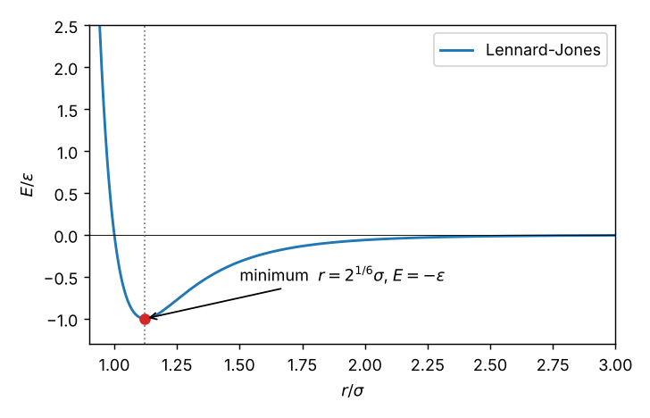

Curriculum/ComputingCOMP 101
Programming and workflow
Every method in this curriculum is, in the end, a program: a molecular-dynamics code integrates equations of motion, a Monte Carlo code samples a distribution, a finite-element code assembles and solves a sparse matrix. You do not need to become a software engineer, but you do need to write programs that are correct, fast enough and reproducible, and to read other people’s. This unit teaches the programming ideas that matter for scientific computing, in Python because it is the language in which nearly all the tools of the field (ASE, pymatgen, phonopy, PySCF, scikit-learn) can be driven, and every number in it was produced by running the code shown.
- Reading time
- about 43 min
- Builds on
- Nothing: this is the place to start
- Leads to
- COMP 102: Your first simulation
LAB 101: Workstation setup
COMP 201: Numerical methods
CMS 401: Introduction
CMS 507: Machine learning
LAB 502: LAMMPS: liquid argon - Level
- Year 1: foundations
- Write Python programs with variables, control flow and functions, and read tracebacks.
- Use NumPy arrays: indexing, slicing, broadcasting and vectorised operations, and know when a view is not a copy.
- Explain how real numbers are stored, estimate rounding errors, and rewrite expressions that lose precision.
- Structure code in functions and modules, write tests with known answers, and debug systematically.
- Read and write data files (text, CSV, JSON, NumPy and crystal-structure formats) and produce clear plots.
- Estimate the cost of an algorithm as a function of system size and replace a quadratic loop by a neighbour list.
- Keep a project reproducible with virtual environments, version control, seeds and run records.
Seven lectures with code that you should type and run; a problem set of twelve problems with hints and full solutions (with the output of the code); and a unit quiz. The code was run with Python 3.13 and NumPy 2.5; newer versions behave the same way for everything shown here, with the exceptions noted.
Lecture 1. Python in one lecture#
A program is a sequence of instructions that the computer executes. Python reads it line by line (it is interpreted), so you can try ideas interactively: type python in the terminal, or run a script with python script.py. The basic ingredients:
- Values and types.
int(arbitrary-size integers),float(64-bit real numbers),bool,str,list,tuple,dict. The type decides what operations mean:3 + 4adds numbers,"3" + "4"joins strings.type(x)shows the type. - Variables are names attached to values:
x = 3.5. Assignment does not copy a list:m = lmakes a second name for the same list (see below). - Arithmetic:
+ - * /,//(floor division),%(remainder),**(power). In Python 3,/always gives a float. - Control flow:
if/elif/else,forloops over any sequence (for k in range(5)gives $0,\ldots,4$),whileloops. Blocks are defined by indentation, not braces. - Functions:
def name(args): ... return value. A function takes arguments, computes, and returns a result; a function with no side effects is easy to test and reuse. - Modules:
import numpy as npbrings in a library; the standard library (math,json,csv,time) is always available, andpip installadds more (LAB 101).
# a first program: the Lennard-Jones potential and its minimum
import math
def lj(r, epsilon=1.0, sigma=1.0):
"""Lennard-Jones energy of a pair at distance r (reduced units by default)."""
x = (sigma / r) ** 6
return 4.0 * epsilon * (x * x - x)
r_min = 2 ** (1 / 6) # position of the minimum
print("r_min = %.6f, E(r_min) = %.6f" % (r_min, lj(r_min)))
for r in (0.95, 1.0, 1.12, 1.5, 2.5):
print("r = %.2f E = %9.5f" % (r, lj(r)))r_min = 1.122462, E(r_min) = -1.000000
r = 0.95 E = 1.96097
r = 1.00 E = 0.00000
r = 1.12 E = -0.99982
r = 1.50 E = -0.32034
r = 2.50 E = -0.01632(The values follow from the formula; check one by hand: at $r=1.5$, $x=(1/1.5)^6=0.0878$ and $E=4(0.00771-0.0878)=-0.3203$.) Three points about this short program matter for everything that follows. (1) The function has a docstring (the text in triple quotes) that says what it does; help(lj) shows it. (2) Default arguments (epsilon=1.0) make the function usable in reduced units and in real units: lj(3.8, 0.0104, 3.405) gives $-0.01039$ eV, the energy of an argon pair at $3.8$ Å. (3) The potential is computed with x*x - x rather than two separate powers, saving a call to the slow power function: an optimisation that costs nothing in readability.
Sequences, comprehensions and the traps of mutable objects
A list is an ordered, changeable collection: l = [1, 2, 3], l[0] is $1$ (indexing starts at zero), l[-1] is the last element, l[1:3] is the slice [2, 3] (start included, end excluded). A comprehension builds a list in one line: [k**2 for k in range(20) if k % 2 == 0] gives [0, 4, 16, 36, 64, 100, 144, 196, 256, 324]. Lists are mutable, which leads to two classic bugs. First, names are not copies:
l = [1, 2, 3]
m = l # a second name for the SAME list
m.append(4)
print(l) # the original has changed
n = list(l) # a real (shallow) copy
n.append(5)
print(l, n)
def add_item(x, lst=[]): # BUG: the default list is created once, when the function is defined
lst.append(x)
return lst
print(add_item(1), add_item(2))[1, 2, 3, 4]
[1, 2, 3, 4] [1, 2, 3, 4, 5]
[1, 2] [1, 2]The last line should have been [1] [2]; the default argument is shared between all calls. The cure is def add_item(x, lst=None) and if lst is None: lst = [] inside. A third trap is integer division and remainders with negative numbers: 7/2 is $3.5$, 7//2 is $3$, but -7//2 is $-4$ (floor, not truncation) and -7 % 3 is $2$ (the remainder has the sign of the divisor), which matters when wrapping coordinates into a periodic box: x % L maps any $x$ into $[0,L)$ for $L>0$, exactly what is needed in LAB 504 ((i - 1) % L wraps from $0$ to $L-1$).
When a program fails, Python prints a traceback: a list of the calls that led to the error, with the most recent last, and the error message on the last line. Read it from the bottom: the type of error (ValueError, IndexError, KeyError, TypeError, ZeroDivisionError, FileNotFoundError) and its message say what is wrong; the line just above gives where. Most errors are fixed by reading the message and the line number with attention; searching the exact message is the second step. Never ignore warnings (RuntimeWarning: overflow encountered): they point to real numerical problems.
Lecture 2. Arrays and vectorisation with NumPy#
Scientific data are arrays of numbers: positions of atoms $(N\times3)$, energies as a function of lattice constant, a stress tensor $(3\times3)$. The NumPy library provides the ndarray, a fixed-type block of memory with fast operations on whole arrays. a = np.array([[1,2,3],[4,5,6]]) has a.shape == (2, 3) and a.dtype == int64. Useful constructors: np.zeros((3, 3)), np.linspace(0, 1, 11), np.arange(0, 10, 2), np.random.default_rng(seed).random((N, 3)).
Arithmetic on arrays is element by element: a * b multiplies entries, a @ b is the matrix product (MATH 103), and functions such as np.sin, np.exp, np.sqrt apply to every entry. Reductions collapse an axis: a.sum(), a.sum(axis=0) (sum of each column), a.mean(), a.max(), np.linalg.norm(v).
Indexing and slicing
import numpy as np
A = np.arange(12).reshape(3, 4)
print(A)
print(A.shape, A[1], A[:, 1], A[1:, ::2])[[ 0 1 2 3]
[ 4 5 6 7]
[ 8 9 10 11]]
(3, 4) [4 5 6 7] [1 5 9] [[ 4 6]
[ 8 10]]A[1] is the second row; A[:, 1] the second column; A[1:, ::2] takes rows from the second on and every second column. Boolean masks select entries: A[A > 5] gives the entries larger than $5$. A crucial fact: a slice is a view, not a copy. It shares the memory of the original, so modifying it modifies the parent:
a = np.arange(6)
b = a[:3] # a view
b[0] = 99
print(a, b.base is a)
c = a[:3].copy() # an independent copy
c[0] = -1
print(a[0])[99 1 2 3 4 5] True
99The first line shows that changing b changed a; b.base is a confirms it is a view. This saves memory and time, but it causes bugs when you modify what you meant to keep. Use .copy() when you need independence.
Broadcasting
Operations between arrays of different shapes are allowed when the shapes are compatible: the shapes are compared from the last axis backwards, and two dimensions are compatible if they are equal or one of them is $1$ (that one is stretched). A column of shape $(3,1)$ plus a row of shape $(4,)$ gives a $(3,4)$ array, which is how one computes all pairwise differences without loops:
col = np.array([[1], [2], [3]])
row = np.array([10, 20, 30, 40])
print((col + row).shape)
print(col + row)
x = np.array([1, 2, 3]); y = np.array([1, 2, 3, 4])
try:
x + y
except ValueError as e:
print("ValueError:", e)(3, 4)
[[11 21 31 41]
[12 22 32 42]
[13 23 33 43]]
ValueError: operands could not be broadcast together with shapes (3,) (4,) The error message states the shapes that failed: $3$ and $4$ are neither equal nor $1$. To compute the distance between every pair of $N$ atoms with positions p of shape $(N,3)$, the expression p[:, None, :] - p[None, :, :] has shape $(N,N,3)$ (every difference vector), and np.linalg.norm(..., axis=-1) reduces it to the $N\times N$ matrix of distances. It needs $O(N^2)$ memory, which is fine for $N\sim10^3$ and hopeless for $10^5$ (Lecture 6).
Why vectorise?
A Python loop executes interpreter code for each element, which costs about $50$–$100$ ns per operation; a NumPy operation runs a compiled loop over the whole array. For the sum of squares of $10^6$ random numbers:
import time
x = np.random.default_rng(1).random(10**6)
t0 = time.perf_counter()
s = 0.0
for v in x: # Python loop
s += v * v
t1 = time.perf_counter()
s2 = np.dot(x, x) # NumPy
t2 = time.perf_counter()
print("python loop %.3f s, numpy dot %.5f s, ratio %.0f, results %.6f %.6f" % (t1 - t0, t2 - t1, (t1 - t0) / (t2 - t1), s, s2))python loop 0.174 s, numpy dot 0.00034 s, ratio 509, results 333329.041014 333329.041014The vectorised version is about $500$ times faster and gives the same number. (Your timings will differ with the machine, and the ratio depends on the operation, but the order of magnitude is typical.) The rule is: never loop over array elements in Python if a NumPy expression does the job; do the loop where it is unavoidable (time steps of a simulation, where each step depends on the previous one) and vectorise inside it.
Compute the Lennard-Jones energy $E=\sum_{i<j}4(r_{ij}^{-12}-r_{ij}^{-6})$ of the $216$ atoms of a simple cubic block with spacing $1.12$ (reduced units), first with two nested loops and then with NumPy, and compare the time and the result.
The double loop over the $N(N-1)/2=23\,220$ pairs takes $0.090$ s and gives $E=-851.971322$. The vectorised version builds the $216\times216\times3$ array of differences, takes the norm over the last axis, extracts the upper triangle with np.triu_indices(N, 1) (each pair once) and sums: it takes $0.0040$ s ($22$ times faster) and gives the same $E$ to $4\times10^{-11}$, the difference due to the order of summation (Lecture 3). The ratio is smaller than for the dot product because most of the vectorised time is spent building the $N\times N\times3$ array in memory.
Lecture 3. How computers store numbers, and what goes wrong#
A computer stores a real number as a floating-point number: a sign, a mantissa and an exponent, in a fixed number of bits. The standard double precision (IEEE 754, Python float, NumPy float64) uses 64 bits: $\pm m\times2^e$ with a mantissa of $53$ bits (about $16$ decimal digits) and $|e|\lesssim1023$ (numbers from $\sim10^{-308}$ to $10^{308}$). Single precision (float32) has $24$ bits ($7$ digits) and is used on graphics processors and in machine learning. Three consequences matter every day.
(1) Most decimal fractions are not exactly representable. $0.1$ in binary is $0.000110011\ldots$ and is rounded. Hence:
print(0.1 + 0.2, 0.1 + 0.2 == 0.3)
s = 0.0
for _ in range(10):
s += 0.1
print(s, s == 1.0)
print(abs((0.1 + 0.2) - 0.3) < 1e-12) # the right way to compare
print(np.finfo(np.float64).eps, np.finfo(np.float32).eps)0.30000000000000004 False
0.9999999999999999 False
True
2.220446049250313e-16 1.1920929e-07Never compare floats with ==; use a tolerance (abs(a - b) < tol or np.isclose(a, b)). The machine epsilon $\epsilon_\mathrm{mach}=2.2\times10^{-16}$ is the spacing of the numbers just above $1$: any rounding of a number of size one makes a relative error up to $\epsilon_\mathrm{mach}/2$. (Python’s built-in sum of a list of ten $0.1$ returns exactly $1.0$ in recent versions because it uses compensated summation, while the plain loop above returns $0.9999999999999999$: the same arithmetic done differently gives different last digits.) Adding a small number to a large one loses it: 1e16 + 1 == 1e16 is True, because the spacing of doubles near $10^{16}$ is $2$.
(2) Subtraction of nearly equal numbers destroys precision (catastrophic cancellation). If $a$ and $b$ agree to $10$ digits, $a-b$ has only about $6$ correct digits left, whatever the arithmetic. Two examples that arise in practice, evaluated with the naive and with an algebraically equivalent stable formula:
import math
for x in (1e-1, 1e-4, 1e-8):
naive = (1 - math.cos(x)) / x**2
stable = 2 * math.sin(x / 2) ** 2 / x**2 # since 1 - cos x = 2 sin^2(x/2)
print("x=%g naive %.10f stable %.10f" % (x, naive, stable))
for x in (1e-5, 1e-10, 1e-15):
print("x=%g (exp(x)-1)/x = %.12g expm1: %.12g" % (x, (math.exp(x) - 1) / x, math.expm1(x) / x))x=0.1 naive 0.4995834722 stable 0.4995834722
x=0.0001 naive 0.4999999970 stable 0.4999999996
x=1e-08 naive 0.0000000000 stable 0.5000000000
x=1e-05 (exp(x)-1)/x = 1.00000500001 expm1: 1.00000500002
x=1e-10 (exp(x)-1)/x = 1.00000008274 expm1: 1.00000000005
x=1e-15 (exp(x)-1)/x = 1.11022302463 expm1: 1The limit of $(1-\cos x)/x^2$ is $\tfrac12$ as $x\to0$; the naive formula returns $0$ at $x=10^{-8}$ (the cosine is rounded to exactly $1$) and has only $8$ correct digits at $x=10^{-4}$. The limit of $(e^x-1)/x$ is $1$; the naive formula returns $1.11$ at $x=10^{-15}$, an error of $11\%$, while math.expm1 (which is accurate for small arguments) is exact. A third classic example is the variance of numbers with a large mean:
data = np.random.default_rng(0).normal(1e9, 1.0, 100000) # mean 1e9, standard deviation 1
naive_var = np.mean(data**2) - np.mean(data)**2 # <x^2> - <x>^2
print("naive variance", naive_var, " two-pass variance", np.var(data), " (true value 1.0)")naive variance 384.0 two-pass variance 1.000257024656903 (true value 1.0)The naive formula subtracts two numbers of size $10^{18}$ whose difference is $1$, so the $16$ digits are all spent and the result is $384$. This is not an exotic situation: the variance of an energy that fluctuates by $0.1$ eV around $-10^4$ eV (a molecular-dynamics run!) is affected in the same way; the stable method computes the mean first and then the mean of the squared deviations, or uses an online algorithm (Welford). Another case is the quadratic formula for $x^2+10^8x+1=0$: the naive root $x_1=(-b+\sqrt{b^2-4ac})/2a$ gives $-7.45\times10^{-9}$ instead of $-10^{-8}$ (a $25\%$ error) while using the product of roots, $x_1=c/(a x_2)$, gives it correctly (Exercise 5).
(3) Truncation versus rounding error. Numerical derivatives illustrate the competition between the two. The forward difference $[f(x+h)-f(x)]/h$ has a truncation error $\sim h$; the central difference $[f(x+h)-f(x-h)]/2h$ has $\sim h^2$; but both suffer rounding errors $\sim\epsilon_\mathrm{mach}/h$ because of the subtraction. For $f=\sin$ at $x=1$ the observed errors are:
| $h$ | forward difference error | central difference error |
|---|---|---|
| $10^{-1}$ | $4.3\times10^{-2}$ | $9.0\times10^{-4}$ |
| $10^{-3}$ | $4.2\times10^{-4}$ | $9.0\times10^{-8}$ |
| $10^{-5}$ | $4.2\times10^{-6}$ | $1.1\times10^{-11}$ |
| $10^{-8}$ | $3.0\times10^{-9}$ | $2.6\times10^{-9}$ |
| $10^{-11}$ | $1.2\times10^{-6}$ | $1.2\times10^{-6}$ |
| $10^{-14}$ | $3.7\times10^{-3}$ | $3.7\times10^{-3}$ |
The error falls as $h$ (or $h^2$) until $h\approx10^{-8}$ (forward) or $10^{-5}$ (central), where rounding takes over, and then it grows as $1/h$: there is an optimal step, about $\sqrt{\epsilon_\mathrm{mach}}\approx10^{-8}$ for the forward difference and $\epsilon_\mathrm{mach}^{1/3}\approx6\times10^{-6}$ for the central one, and making $h$ smaller is not better. The same competition appears in the choice of time step of a simulation (LAB 502), in the mesh size of finite elements (LAB 507) and in the tolerances of optimisers. And integers are different again: Python integers have unlimited size, but NumPy integers wrap around: np.int8(127) + np.int8(1) gives $-128$ with only a warning, which is why LAB 504 uses 64-bit integers for the spin sums.
Lecture 4. Writing correct code: functions, tests and debugging#
A program that runs is not necessarily a program that is right. In simulation, wrong code usually does not crash: it produces plausible numbers. The defence is to build code from small, understandable pieces and to test each against answers known independently.
Functions and modules
A function should do one thing, take its inputs as arguments and return its result (instead of reading and writing global variables), and have a name that says what it does. A module is a file of functions that other files import. The file below, lj.py, contains two functions; the second one uses NumPy broadcasting to compute the energy of $N$ atoms as in Lecture 2, taking each pair once through the upper triangle of the distance matrix:
"""Lennard-Jones energy of a set of atoms (reduced units by default)."""
import numpy as np
def pair_energy(r, epsilon=1.0, sigma=1.0):
"""Energy of one pair at distance r."""
x = (sigma / r) ** 6
return 4.0 * epsilon * (x * x - x)
def total_energy(positions, epsilon=1.0, sigma=1.0, cutoff=None):
"""Sum of pair energies over all distinct pairs (open boundaries). Pairs beyond cutoff are ignored."""
positions = np.asarray(positions, dtype=float)
d = np.linalg.norm(positions[:, None, :] - positions[None, :, :], axis=-1)
i, j = np.triu_indices(len(positions), 1) # each pair once
r = d[i, j]
if cutoff is not None:
r = r[r < cutoff]
return float(np.sum(pair_energy(r, epsilon, sigma)))Tests with known answers
How do you know that total_energy is right? You cannot compare with a result you do not have, but you can check properties that must hold. A test is a function that calls your code with an input for which the answer is known and asserts that the result is correct (assert condition raises an error if the condition is false); the program pytest finds all functions whose names start with test_ in files named test_*.py, runs them and reports. Good tests of a physics code come from several sources: analytic cases (the minimum of the Lennard-Jones potential has depth $\varepsilon$ at $2^{1/6}\sigma$; two atoms have the energy of one pair), symmetries (the energy cannot change if the whole system is translated, rotated, or if the atoms are relabelled), and limits (an infinite cutoff reproduces the sum without a cutoff):
import numpy as np
from lj import pair_energy, total_energy
def test_minimum_depth():
assert abs(pair_energy(2 ** (1 / 6)) + 1.0) < 1e-12 # the well depth is epsilon
def test_zero_crossing():
assert abs(pair_energy(1.0)) < 1e-12 # E(sigma) = 0
def test_two_atoms_equals_pair():
pos = [[0, 0, 0], [1.3, 0, 0]]
assert abs(total_energy(pos) - pair_energy(1.3)) < 1e-12
def test_translation_and_rotation_invariance():
rng = np.random.default_rng(0)
pos = rng.random((10, 3)) * 3
shifted = pos + np.array([5.0, -2.0, 1.0])
rotated = pos @ np.array([[0, -1, 0], [1, 0, 0], [0, 0, 1]]).T
e0 = total_energy(pos)
assert abs(total_energy(shifted) - e0) < 1e-9 * abs(e0)
assert abs(total_energy(rotated) - e0) < 1e-9 * abs(e0)
def test_permutation_invariance():
rng = np.random.default_rng(1)
pos = rng.random((8, 3)) * 3
assert abs(total_energy(pos) - total_energy(pos[::-1])) < 1e-9 * abs(total_energy(pos))
def test_cutoff_reduces_to_full_for_large_cutoff():
pos = [[0, 0, 0], [1.1, 0, 0], [0, 1.2, 0]]
assert abs(total_energy(pos, cutoff=100.0) - total_energy(pos)) < 1e-12$ pytest -q
...... [100%]
6 passed in 0.14sNow introduce a bug a beginner would make, finding the pairs with i, j = np.nonzero(d > 0) instead of np.triu_indices (this finds every pair twice, once as $(i,j)$ and once as $(j,i)$). The result:
..F... [100%]
=================================== FAILURES ===================================
__________________________ test_two_atoms_equals_pair __________________________
def test_two_atoms_equals_pair():
pos = [[0, 0, 0], [1.3, 0, 0]]
> assert abs(total_energy(pos) - pair_energy(1.3)) < 1e-12
E assert 0.6570169144600471 < 1e-12
E + where 0.6570169144600471 = abs((-1.3140338289200941 - -0.6570169144600471))
E + where -1.3140338289200941 = total_energy([[0, 0, 0], [1.3, 0, 0]])
E + and -0.6570169144600471 = pair_energy(1.3)
FAILED test_bug.py::test_two_atoms_equals_pair - assert 0.6570169144600471 < ...
1 failed, 5 passed in 0.15sThe energy is twice the pair energy. Notice that five of the six tests still passed: translation, rotation and permutation invariance, and the cutoff test all compare the code with itself and are blind to a factor of two. Only the test with an independent, analytic answer caught the error. A test suite needs at least one test with an independently known answer for every quantity that matters, and a bug that gives a consistently wrong factor (a wrong unit conversion, a double-counted pair, a missing factor $\tfrac12$) is the hardest to see in a simulation. A good habit is also to test the limiting case first (two atoms) before a many-atom system.
Debugging
When something is wrong, work systematically: (1) reproduce the error with the smallest input that shows it (two atoms, three steps); (2) read the message and the line it points to; (3) print the intermediate values (print(x.shape, x.dtype, x[:3])) to find the first place where reality departs from your expectation; (4) change one thing at a time; (5) use a debugger (python -m pdb script.py, or the one in your editor) to stop at a line and inspect the variables; (6) explain the problem to someone (or to a rubber duck): stating what the code should do line by line usually reveals the discrepancy. The most common sources of errors in scientific code are: off-by-one in index ranges and slices, wrong units (Joules against eV, Å against nm, radians against degrees), an array view modified by accident (Lecture 2), a wrong axis in a sum, uninitialised or reused variables between runs, an integer used where a float is needed, and silent nan values (a $0/0$ or $\infty-\infty$ spreads through all later arithmetic; check with np.isfinite(a).all()).
The Mars Climate Orbiter was lost in 1999 because one program gave impulses in pound-force seconds and another read them in newton seconds. In computational materials science the usual systems are: reduced units (LAMMPS units lj: $\sigma=\varepsilon=m=1$), metal units (Å, eV, ps, amu: LAMMPS units metal, ASE) and atomic units (Hartree and Bohr: quantum chemistry codes such as PySCF). Convert at the boundaries of the program, name variables with their units (energy_eV, length_A) and use constants from a library (scipy.constants, ase.units) rather than typing them. A single check on a known number (the density of copper from the lattice constant, the energy of a hydrogen atom $-0.5$ Hartree $=-13.606$ eV) catches most unit errors.
Lecture 5. Data in and out, and making figures#
Simulations produce data that must be stored, shared and plotted. Choose the format by who or what will read it:
| Format | Good for | Reading in Python | Remarks |
|---|---|---|---|
| Plain text / CSV | small tables, to be read by people and spreadsheets | np.loadtxt, csv, pandas.read_csv | human-readable; slow and large for big arrays; precision limited by the number of digits written |
| JSON | parameters, run records, nested metadata | json.load | no comments; numbers as text |
NumPy .npy / .npz | large arrays between Python programs | np.load | exact binary floats; fast; compact |
| HDF5 / NetCDF | very large, structured scientific data | h5py, netCDF4 | self-describing; partial reads |
| Structure files (CIF, extended XYZ, POSCAR, LAMMPS data) | atomic structures | ase.io.read | see LAB 201 |
import numpy as np, csv, json, os
r = np.linspace(0.95, 3.0, 8)
from lj import pair_energy
E = pair_energy(r)
# CSV by hand and with numpy
with open("lj.csv", "w", newline="") as f:
w = csv.writer(f); w.writerow(["r", "E"]); w.writerows(zip(r, E))
print(open("lj.csv").read())
data = np.loadtxt("lj.csv", delimiter=",", skiprows=1)
print(data.shape, data[0], np.allclose(data[:, 1], E))
# JSON for parameters and results
meta = {"model": "lennard-jones", "epsilon": 1.0, "sigma": 1.0, "cutoff": 2.5, "n_points": len(r), "E_min": float(E.min())}
json.dump(meta, open("meta.json", "w"), indent=2); print(open("meta.json").read())
# binary NumPy file
np.save("lj.npy", data); print(os.path.getsize("lj.csv"), "bytes (csv)", os.path.getsize("lj.npy"), "bytes (npy)", np.load("lj.npy").dtype)
# a structure file (extended xyz written by hand)
pos = np.array([[0, 0, 0], [0, 0, 1.12], [0, 1.12, 0]])
with open("trimer.xyz", "w") as f:
f.write("%d\n" % len(pos)); f.write('Lattice="10 0 0 0 10 0 0 0 10" Properties=species:S:1:pos:R:3 pbc="F F F"\n')
for p in pos: f.write("Ar %.4f %.4f %.4f\n" % tuple(p))
print(open("trimer.xyz").read())r,E
0.95,1.9609746568876103
1.2428571428571429,-0.7908114480765251
1.5357142857142856,-0.2816828123928049
1.8285714285714283,-0.10413883106252196
2.121428571428571,-0.04340089852191982
2.4142857142857137,-0.020096914213978353
2.707142857142857,-0.010136503660512565
3.0,-0.0054794417442387755
(8, 2) [0.95 1.96097466] True
{
"model": "lennard-jones",
"epsilon": 1.0,
"sigma": 1.0,
"cutoff": 2.5,
"n_points": 8,
"E_min": -0.7908114480765251
}
302 bytes (csv) 256 bytes (npy) float64
3
Lattice="10 0 0 0 10 0 0 0 10" Properties=species:S:1:pos:R:3 pbc="F F F"
Ar 0.0000 0.0000 0.0000
Ar 0.0000 0.0000 1.1200
Ar 0.0000 1.1200 0.0000The CSV file and its reading by np.loadtxt round-trip exactly here because Python writes the shortest decimal string that represents the float uniquely (np.allclose reports True); a file written with %.4f would not. The binary .npy file is smaller even for eight points and for millions of points it is smaller (no text conversion, no separators) and much faster to load. The last block is the extended XYZ format: the number of atoms, a comment line carrying the cell, and one line per atom; it is the format of choice for exchanging structures with OVITO, ASE and machine-learning potential codes (LAB 503).
Plotting
The standard library is Matplotlib (import matplotlib.pyplot as plt). The rules of a good scientific figure: label both axes with the quantity and its unit; make the data the largest element and use lines for continuous functions and markers for measured or computed points; choose colours that remain distinguishable in grey scale; add a legend only if there is more than one curve; and mark the key feature (here, the minimum). The figure below was produced by a ten-line script:

On a server without a screen, select a non-interactive backend before importing pyplot (matplotlib.use("Agg")) and save with fig.savefig("name.png", dpi=150). Save the data as well as the figure: a figure cannot be re-plotted with a different range or a fit added, a data file can.
Lecture 6. Speed: complexity, vectorisation and neighbour lists#
How long will a calculation take for ten times more atoms? The answer comes from the computational complexity: how the number of operations scales with the size $N$ of the problem. For the energy of $N$ atoms with pair interactions, the straightforward method computes all $N(N-1)/2$ distances: complexity $O(N^2)$, so ten times more atoms means a hundred times more work. But a pair potential with a cutoff $r_c$ ($2.5\sigma$ in LAB 502) only needs the pairs within $r_c$; each atom has a number of neighbours $\sim\rho\tfrac43\pi r_c^3$ independent of $N$, so only $\sim N$ pairs matter, and a neighbour list (a data structure that finds them without testing all pairs) gives $O(N)$. Cell lists divide the box into cells of size $r_c$ and look only at neighbouring cells; the tree used in scipy.spatial.cKDTree works similarly. The measurements below use random points at constant density with $r_c=2.5$:
| $N$ | pairs found | all pairs with NumPy (s) | cKDTree (s) | ratio |
|---|---|---|---|---|
| 500 | 5930 | 0.0136 | 0.0017 | 8 |
| 1000 | 13 112 | 0.0469 | 0.0040 | 12 |
| 2000 | 26 477 | 0.6752 | 0.0133 | 51 |
| 4000 | 56 182 | 1.4647 | 0.0318 | 46 |
Both methods find exactly the same number of pairs. The tree time grows roughly in proportion to $N$ ($0.0017\to0.0040\to0.0133\to0.0318$ s for $N$ doubling each time: the ratios $2.4$, $3.3$ and $2.4$ scatter around the ideal $2$ because timings this short are noisy), while the all-pairs time grows much faster and irregularly ($\times3.4$, $\times14$ and $\times2.2$ per doubling; the ideal $O(N^2)$ would give $\times4$ every time, and the irregularity comes from memory effects when the $N\times N\times3$ array stops fitting in the fast memory of the processor). Extrapolated to $10^6$ atoms, the all-pairs method would need $\sim10^{12}$ distances and a distance matrix of $8$ TB; the neighbour list needs seconds. This is the reason that every molecular dynamics code (LAMMPS, GROMACS) uses neighbour lists, updated only when atoms have moved more than a skin distance (the neighbor 0.3 bin command of the lab inputs).
Where does the time go? Profiling
Before optimising, measure: the part of the code that is slow is rarely the one you suspect. cProfile counts the calls and times each function:
import numpy as np, cProfile, pstats, io
def energy_loop(pos):
E = 0.0
for i in range(len(pos)):
for j in range(i + 1, len(pos)):
r = np.linalg.norm(pos[i] - pos[j])
E += 4 * (r**-12 - r**-6)
return E
g = np.arange(8) * 1.12
pos = np.array(np.meshgrid(g, g, g)).reshape(3, -1).T # 512 atoms
pr = cProfile.Profile(); pr.enable(); e = energy_loop(pos); pr.disable()
s = io.StringIO(); pstats.Stats(pr, stream=s).sort_stats("cumulative").print_stats(6); print("E =", e)
print("\n".join(l for l in s.getvalue().splitlines() if l.strip()))E = -2183.175528261176
1047043 function calls in 0.738 seconds
Ordered by: cumulative time
List reduced from 10 to 6 due to restriction <6>
ncalls tottime percall cumtime percall filename:lineno(function)
1 0.243 0.243 0.738 0.738 prof_demo.py:3(energy_loop)
130816 0.226 0.000 0.474 0.000 numpy/linalg/_linalg.py:2615(norm)
130816 0.091 0.000 0.091 0.000 {method 'dot' of 'numpy.ndarray' objects}
130816 0.047 0.000 0.082 0.000 numpy/linalg/_linalg.py:168(isComplexType)
261632 0.052 0.000 0.052 0.000 {built-in method builtins.issubclass}
130816 0.039 0.000 0.039 0.000 {method 'ravel' of 'numpy.ndarray' objects}The loop calls np.linalg.norm $130\,816=512\cdot511/2$ times (once per pair); that function takes $0.474$ s of the $0.738$ s, mostly in checks of the array type and reshaping, not in the arithmetic. The cost is the overhead per call of $\sim3.6$ µs, which dwarfs the three subtractions and the square root. Vectorising removes the overhead by doing all pairs in one call (Lecture 2), and a compiled language does it at the speed of the hardware: that is the idea behind numba (@njit, used in LAB 504, which compiles a Python loop to machine code), Cython, and the C++ of LAMMPS. The golden rules of optimisation are: (1) make it correct first; (2) measure; (3) improve the algorithm (complexity) before the implementation (constants); (4) keep the test suite and run it after each change, because an optimisation that changes the answer is a bug.
Memory, precision and parallelism
A $10^5\times10^5$ matrix of doubles takes $80$ GB; a dense matrix is the wrong tool for large problems, and sparse matrices (scipy.sparse, the stiffness matrices of LAB 507) store only the non-zero entries. Using float32 halves the memory and, on a GPU, doubles the speed, but with $7$ digits (Lecture 3); machine-learning potentials are often trained in single precision and then evaluated in double. Parallelism is of three kinds: vectorised (SIMD instructions in one core; NumPy does it), shared-memory threads on the cores of one computer (NumPy linear algebra, OpenMP), and distributed processes on many nodes (MPI, used by LAMMPS, DFT codes). Amdahl’s law limits the gain: if a fraction $s$ of the work is serial, the speed-up on $P$ processors is $1/[s+(1-s)/P]$, which can never exceed $1/s$; a code that is $5\%$ serial gains at most a factor $20$ however many processors are used. Embarrassingly parallel tasks (independent random seeds, parameter scans, the job arrays of LAB 101) have $s=0$ and are the easiest way to use a cluster.
Lecture 7. Reproducible workflow#
A computational result is science only if someone else (or you in a year) can reproduce it. The practices below are the content of LAB 101, summarised here with their reasons.
| Habit | How | What it prevents |
|---|---|---|
| One project, one folder, one environment | python -m venv venv; pip freeze > requirements.txt | “it worked before I updated NumPy” |
| Everything is a script | no manual steps in notebooks or spreadsheets between input and figure | results that cannot be regenerated |
| Version control | git init, small commits with messages that say why | lost working versions; “which script made this figure?” |
| Fixed seeds, recorded in the output | np.random.default_rng(seed); run.json with seed, parameters, versions, time | unrepeatable stochastic results |
| Parameters in one place | a config file or the top of the script; no magic numbers in the body | silent inconsistency between runs |
| Tests | pytest after every change | silent breakage |
| Raw data are read-only | keep input/ untouched; write only to output/ | overwriting the only copy |
| Document | a README.md: what, how to run, what to expect | code nobody (including you) can use |
A last piece of professional practice concerns attribution and validation. When you use a code or a potential, cite it (the citation is listed in its manual); when you obtain a number, compare it with an experiment or with an independent calculation, as every lab in this curriculum does, and say how large the discrepancy is. A simulation that cannot be tested against anything is a description of the model, not a prediction about the material.
- Scientific programming in Python rests on a small stack: the language for control flow and functions, NumPy for arrays (whole-array operations are about 500 times faster than a Python loop: 0.174 s against 0.00034 s for a million-element dot product), SciPy for algorithms and Matplotlib for figures.
- Computers represent real numbers with finite precision: 0.1 + 0.2 is 0.30000000000000004, the spacing of double-precision numbers near 1 is 2.2e-16, subtracting nearly equal numbers loses digits ((1 - cos x)/x^2 returns 0 instead of 0.5 at x = 1e-8) and a naive variance of numbers near 1e9 is 384 instead of 1; the cure is a mathematically equivalent but stable formula.
- Write code as small functions with clear inputs and outputs, test them against cases with known answers (assert, pytest), and learn the usual bugs: mutable default arguments, views against copies in NumPy, integer overflow in fixed-size integers and shape errors in broadcasting.
- Algorithmic complexity decides what is possible: an all-pairs distance calculation grows as N^2 (1.46 s for 4000 particles) while a cell or tree neighbour list grows as N (0.032 s for the same 4000 particles and the same 56 182 pairs), which is the reason molecular-dynamics codes use neighbour lists.
- A result is only science if it can be reproduced: keep scripts and inputs under version control, fix random seeds, pin package versions in a virtual environment, and save a run record next to the output (see LAB 101).
Problem set#
Attempt each problem before opening the hint, and the hint before the solution. Mark problems as solved to track your progress.
(a) Write a list comprehension that gives the squares of the even numbers from $0$ to $18$. (b) What are 7 // 2, -7 // 2, -7 % 3 and 7.5 % 3.0? (c) After l = [1, 2, 3]; m = l; m.append(4), what is l?
Hint
Floor division rounds towards minus infinity; the remainder takes the sign of the divisor.
Full solution
(a) [k**2 for k in range(0, 20, 2)] (or with if k % 2 == 0) gives [0, 4, 16, 36, 64, 100, 144, 196, 256, 324]. (b) $3$, $-4$, $2$ and $1.5$. (c) [1, 2, 3, 4]: m is another name for the same list, so the append changes l too; use m = list(l) or l.copy() for an independent list.
(a) [0, 4, 16, ..., 324] (b) $3$, $-4$, $2$, $1.5$ (c) [1, 2, 3, 4]
With a = np.arange(1, 26).reshape(5, 5) (the numbers $1$ to $25$ in a $5\times5$ array), evaluate (a) a[1:4, 1:4].sum(), (b) the sum of the main diagonal, (c) a[::2, ::2]. (d) Which of these are views of a?
Hint
Row $i$, column $j$ holds $5i+j+1$ (counting from $0$).
Full solution
(a) The inner $3\times3$ block has the entries $7$, $8$, $9;12$, $13$, $14;17$, $18$, $19$, whose sum is $117$. (b) The diagonal is $1, 7, 13, 19, 25$: sum $65$. (c) Rows and columns $0,2,4$: [[1, 3, 5], [11, 13, 15], [21, 23, 25]]. (d) All slices (a[1:4, 1:4], a[::2, ::2] and a.diagonal() as a read-only view) are views of the same memory; only the sums are new numbers. Modifying a[::2, ::2][0, 0] = 0 would change a[0, 0].
(a) $117$ (b) $65$ (c) [[1, 3, 5], [11, 13, 15], [21, 23, 25]] (d) all slices
Find the machine epsilon of double precision by halving a number until 1.0 + eps/2 == 1.0. (a) What value do you get and what does it mean? (b) Is 1e16 + 1 == 1e16? Why? (c) How many decimal digits does a double hold?
Hint
The spacing of doubles just above $1$ is $2^{-52}$.
Full solution
(a) eps = 1.0; while 1.0 + eps/2 != 1.0: eps /= 2 ends with eps = 2.220446049250313e-16 $=2^{-52}$: the smallest number that can be added to $1$ and change it; it is the spacing of the floating-point numbers near $1$, and rounding gives a relative error of at most $\epsilon/2=1.1\times10^{-16}$. (b) Yes (True): near $10^{16}$ the spacing of doubles is $2$ (because $10^{16}\approx2^{53}$), so adding $1$ is rounded away. (c) $53$ bits of mantissa $=\log_{10}2^{53}=15.95$, i.e. $15$–$16$ significant decimal digits.
(a) $2.22\times10^{-16}=2^{-52}$ (b) yes: spacing $2$ (c) $\approx16$
Write the Lennard-Jones energy of the $216$ atoms of a simple cubic block of spacing $1.12$ with (a) two nested loops and (b) NumPy broadcasting. Compare the results and the times. (c) Why do the energies differ in the last digits?
Hint
Use np.triu_indices(N, 1) to take each pair once; time with time.perf_counter().
Full solution
(a) E = 0.0; for i in range(N): for j in range(i+1, N): r = np.linalg.norm(pos[i] - pos[j]); E += 4*(r**-12 - r**-6). (b) d = np.linalg.norm(pos[:, None, :] - pos[None, :, :], axis=-1); i, j = np.triu_indices(N, 1); r = d[i, j]; E = np.sum(4*(r**-12 - r**-6)). Result: the loop gives $E=-851.971322$ in $0.090$ s and the vectorised code $-851.971322$ in $0.0040$ s, a factor of $22$; the difference between them is $4\times10^{-11}$. (c) Floating-point addition is not associative: the loop adds the pair energies one by one in the order of $(i,j)$, while np.sum adds them in blocks (pairwise summation); the roundings differ, giving different last digits. A test should therefore compare with a tolerance (np.isclose) and never with ==.
(a), (b) $E=-851.971322$; $0.090$ s against $0.0040$ s ($22\times$) (c) summation order and rounding
Solve $x^2+10^8x+1=0$ with the formula $x=(-b\pm\sqrt{b^2-4ac})/2a$ in double precision. (a) What do you get for the root of small magnitude? (b) What is the exact value to $10$ digits? (c) Give a stable method.
Hint
The product of the roots is $c/a$.
Full solution
(a) The naive $(-b+\sqrt{b^2-4ac})/2a$ subtracts two almost equal numbers ($10^8$ and $\sqrt{10^{16}-4}=10^8-2\times10^{-8}$), and gives $-7.45\times10^{-9}$ (the printed result is -7.450580596923828e-09), a $25\%$ error. (b) The small root is $x_1\approx-c/b=-1.000000000\times10^{-8}$ (to ten digits, with correction $-10^{-24}$). (c) Compute first the root without cancellation, $q=-\tfrac12[b+\mathrm{sign}(b)\sqrt{b^2-4ac}]$, so $x_2=q/a=-10^8$, then use $x_1x_2=c/a$: $x_1=c/q=-10^{-8}$ (code: q = -0.5*(b + copysign(d, b)); roots = q/a, c/q). The stable result printed is (-100000000.0, -1e-08). The same strategy (avoid subtracting equal quantities by using an algebraic identity) applies to $1-\cos x$, $e^x-1$ and the variance (Lecture 3).
(a) $-7.45\times10^{-9}$ ($25\%$ wrong) (b) $-1.000000000\times10^{-8}$ (c) $q=-\tfrac12[b+\mathrm{sign}(b)\sqrt{\cdot}]$, $x_1=c/q$
Add the three numbers $10^{16}$, $1$ and $-10^{16}$ in double precision in the order given and in other orders. (a) What do you get? (b) Which order gives the exact answer $1$? (c) What does math.fsum do?
Hint
The spacing of doubles near $10^{16}$ is $2$.
Full solution
(a) In the order given, $(10^{16}+1)-10^{16}$: the first sum rounds back to $10^{16}$, so the result is $0.0$ (the same with np.sum). (b) Adding the large numbers first, $(10^{16}+(-10^{16}))+1$, gives $1.0$: the order $[1, 10^{16}, -10^{16}]$ would give $0$ again because $1+10^{16}$ rounds, but $[10^{16}, -10^{16}, 1]$ gives $1$. (c) math.fsum keeps track of the lost low-order bits (it is an exact-summation algorithm based on partial sums) and returns 1.0 for any order. For energies summed over many pairs of very different size it is worth using (or sorting by magnitude); for most work, NumPy’s pairwise summation is accurate enough.
(a) $0.0$ (b) large terms first (c) exact summation, $1.0$
Using the table of finite-difference errors of Lecture 3, (a) estimate the truncation error coefficient of the forward difference of $\sin$ at $x=1$ from the value at $h=10^{-3}$; (b) estimate the optimal step of the central difference from the competition $h^2f^{(3)}/6$ against $\epsilon|f|/h$; (c) verify with the table.
Hint
The truncation error of the forward difference is $\tfrac12hf^{\prime\prime}(x)$; that of the central difference is $\tfrac16h^2f^{(3)}(x)$.
Full solution
(a) For $f=\sin$: $f^{\prime\prime}(1)=-\sin1=-0.841$, so the error is $\tfrac12(10^{-3})(0.841)=4.2\times10^{-4}$, equal to the entry $4.2\times10^{-4}$ of the table. (b) For the central difference, truncation $\tfrac16h^2|f^{(3)}|=\tfrac16h^2(0.540)=0.09h^2$ and rounding $\approx\epsilon_\mathrm{mach}|f|/h=1.9\times10^{-16}/h$. They are equal at $h^3=1.9\times10^{-16}/0.09$, i.e. $h\approx1.3\times10^{-5}$, with a minimum total error of the order $10^{-11}$. (c) The table shows $1.1\times10^{-11}$ at $h=10^{-5}$ and $2.6\times10^{-9}$ at $10^{-8}$ (rounding dominates by then): the optimum is indeed near $10^{-5}$, and the best accuracy of the central difference is only about $10^{-11}$, not $10^{-16}$. This is why finite-difference forces in codes use steps $\sim0.01$ Å for phonons (LAB 301, where the displacement is large enough that the forces are well above the numerical noise of the potential).
(a) $4.2\times10^{-4}$ ✓ (b) $h_\mathrm{opt}\approx10^{-5}$ (c) the table agrees, best error $\sim10^{-11}$
Write a function wrap(x, L) that maps coordinates into the periodic box $[0,L)$, and the tests you would write. (a) What does (-1e-20) % 10.0 return? (b) Is it a valid result for wrap? (c) Fix the function.
Hint
Test the invariant $0\le y<L$ and also that the result differs from $x$ by a multiple of $L$.
Full solution
(a) (-1e-20) % 10.0 returns 10.0: mathematically $-10^{-20}+10=9.99999999999999999999$, which cannot be represented and rounds to $10$. (b) No: the result is not in $[0,L)$; it equals $L$, which is the image of $0$. An atom at $x=-10^{-20}$ is placed on the other side of the box, in a position that a cell list indexed by int(x/L*ncell) would map to the cell number $n_\mathrm{cell}$, an out-of-range index (a rare crash after millions of steps). (c) def wrap(x, L): y = np.mod(x, L); return np.where(y >= L, 0.0, y); the output of wrap(np.array([-1e-20, -0.5, 10.5, 3.0]), 10.0) is [0. 9.5 0.5 3.]. Tests: for random $x$ (including multiples of $L$ and tiny negative numbers), assert 0 <= y < L, assert np.allclose(np.mod(y - x + L/2, L) - L/2, 0) (differs from $x$ by a multiple of $L$), and assert idempotence wrap(wrap(x)) == wrap(x). Edge cases are where the bugs live.
(a) 10.0 (b) no: not in $[0,L)$ (c) map $y\ge L$ to $0$; test the invariants
The all-pairs distance calculation of Lecture 6 took $1.4647$ s for $N=4000$ and the tree $0.0318$ s. (a) Extrapolate both to $N=10^5$ assuming $O(N^2)$ and $O(N)$. (b) How much memory would the $N\times N\times3$ array of differences need? (c) What do you conclude for a system of $10^6$ atoms?
Hint
Scale by $(N_2/N_1)^2$ or $N_2/N_1$; each double takes $8$ bytes.
Full solution
(a) $N_2/N_1=25$. All pairs: $1.4647\times25^2=915$ s ($15$ min); tree: $0.0318\times25=0.80$ s. (b) $10^5\times10^5\times3\times8$ bytes $=2.4\times10^{11}$ bytes $=240$ GB, more than the memory of most computers: the all-pairs array cannot even be built. (c) For $10^6$ atoms the all-pairs method would take $\sim10^5$ s ($28$ h) and $24$ TB; the neighbour list takes about $8$ s for the search. Hence large simulations are possible only with algorithms that scale linearly (cell lists, trees) and are parallelised over domains. The extrapolation is only an estimate: the memory behaviour changes with size.
(a) $915$ s; $0.80$ s (b) $240$ GB (c) only $O(N)$ methods are possible
A program is $5\%$ serial. (a) What speed-up does Amdahl’s law give on $16$ and on $100$ processors, and what is the limit? (b) What serial fraction is needed for a speed-up of $50$ on $100$ processors? (c) Why are parameter scans easier to parallelise than a single molecular-dynamics run?
Hint
$S(P)=1/[s+(1-s)/P]$.
Full solution
(a) $S(16)=1/(0.05+0.95/16)=9.14$ and $S(100)=1/(0.05+0.0095)=16.8$; the limit is $1/s=20$. Using $100$ processors instead of $16$ gives only $1.8$ times more speed. (b) $50=1/[s+(1-s)/100]$ gives $s=(1/50-1/100)/(1-1/100)=0.0101$: about $1\%$ serial. (c) The runs of a scan (different temperatures, seeds, structures) are completely independent: no communication, $s=0$, linear speed-up on a job array (LAB 101). A single MD run must exchange the positions of atoms near the boundary of each processor’s domain at every step and synchronise: the communication is the serial-like part, which grows relative to the computation as the domains become smaller (strong scaling saturates).
(a) $9.1$, $16.8$, limit $20$ (b) $1\%$ (c) independent runs need no communication
Implement Welford’s online algorithm for the mean and variance, n += 1; d = x - mean; mean += d/n; M2 += d*(x - mean), with $\mathrm{var}=M_2/n$. (a) Test it on the $10^5$ numbers of mean $10^9$ and standard deviation $1$ of Lecture 3. (b) Why does it not suffer from cancellation? (c) Why is it useful for simulations?
Hint
It subtracts the running mean before squaring, so the differences are of order one.
Full solution
(a) The algorithm returns the mean $999\,999\,999.9990933$ and the variance $1.0002570696$, against the two-pass np.var $1.0002570247$ (the difference $4.5\times10^{-8}$ is rounding error in the mean of $10^{9}$-sized numbers) and the naive $384$. (b) The quantities squared, $x-\mathrm{mean}$ and $d$, are of order one (the standard deviation) and not of order $10^9$: the large common offset is removed before squaring, so no digits are lost. (c) It processes one sample at a time with constant memory, so the mean and the variance of an observable (energy, pressure) can be accumulated during a run of $10^9$ steps without storing the series, and with numerical stability; production codes use it (or block averages) for the statistics reported in the log file.
(a) $1.000257$ (naive: $384$) (b) subtracts the running mean first (c) streaming statistics with constant memory
You run a stochastic simulation with rng = np.random.default_rng(5). (a) What does rng.random(3) return in two separate runs? (b) What do you get with seed $6$? (c) List what must be recorded so that a colleague can reproduce the run in a year, and what could still make the result differ.
Hint
Think about software versions, hardware, parallelism and defaults.
Full solution
(a) Both runs return [0.80500292 0.80794079 0.51532556]: the generator is deterministic given the seed. (b) With seed $6$: [0.53816435 0.34327087 0.36906724], an independent stream. (c) Record the seed, all parameters and input files (or their hashes), the versions of Python and of every package (pip freeze), the git commit of the code, the command line, the machine and the date, and the outputs of the run in a run.json. Even then the result can differ if: the random-number algorithm changes between library versions (NumPy guarantees the stream of a Generator only within a version policy), the code uses threads or MPI processes whose order of operations is not deterministic, a different CPU or compiler changes floating-point rounding, or a dependency is updated silently. For stochastic quantities, report the statistical error over several seeds so that exact reproducibility of one stream is not needed for the science to be reproducible.
(a) identical numbers (b) different numbers (c) seed, versions, commit, command; remaining differences from parallelism and libraries
Unit quiz#
Closed-book, about 45 minutes, six questions. Attempt all of them before opening any solution, then mark yourself honestly.
Why is 0.1 + 0.2 == 0.3 false in Python, and how should floating-point numbers be compared?
Solution
$0.1$, $0.2$ and $0.3$ have no finite binary expansion and are stored rounded to $53$ bits; the sum of the two rounded numbers differs from the rounded $0.3$ in the last bit ($0.30000000000000004$). Compare with a tolerance, abs(a-b) < tol or np.isclose, with a tolerance suited to the size of the numbers and the accumulated error.
What is the difference between a view and a copy in NumPy and how can the difference lead to a bug?
Solution
A slice such as a[:3] is a view: it shares memory with a, so changing it changes the original. A copy (a[:3].copy(), or fancy indexing with a list or mask) is independent. A bug arises when a function modifies a slice of its argument believing it has a private copy, so that the caller’s data are silently altered.
Explain catastrophic cancellation with the example of $(1-\cos x)/x^2$ for small $x$ and give a stable alternative.
Solution
For small $x$, $\cos x$ is so close to $1$ that $1-\cos x$ keeps few or no correct digits (for $x=10^{-8}$ it is exactly $0$ in double precision) and dividing by $x^2$ amplifies the error: the naive formula returns $0$ where the limit is $1/2$. The identity $1-\cos x=2\sin^2(x/2)$ gives the stable form $2\sin^2(x/2)/x^2$ which gives $0.5$ with full precision.
A test suite passes but the simulation gives an energy that is twice the correct one. How can this happen and what test would have caught it?
Solution
If all tests compare the code with itself (invariance under translation, rotation or permutation, or a large cutoff reproducing the code without cutoff) a systematic factor such as double counting of pairs passes unseen. A test with an independently known answer, for example two atoms whose energy is the analytic pair energy, or the cohesive energy of a known crystal, would have caught it.
Why does a neighbour list reduce the cost of a pair-potential calculation from $O(N^2)$ to $O(N)$, and what is the “skin”?
Solution
With a cutoff $r_c$ each atom interacts only with the $\sim\rho\tfrac43\pi r_c^3$ atoms within $r_c$, a number independent of $N$, so only $\sim N$ pairs contribute; a cell list or tree finds them without testing the other $\sim N^2$ pairs. The list is built with a slightly larger radius $r_c+\text{skin}$ and reused for several steps until some atom has moved more than half the skin, because atoms move little in one time step.
Describe a minimal set of practices that make a computational result reproducible by someone else, and one thing that can still prevent bit-for-bit reproduction.
Solution
Scripts instead of manual steps; a virtual environment with pinned versions (requirements.txt); version control with the commit recorded; fixed seeds and a run record (parameters, versions, machine, time) saved with the output; inputs kept read-only; tests; a README. Bit-for-bit identity can still be lost through parallel summation order, different hardware or compiler, library updates, and non-deterministic GPU kernels: the scientific conclusion should be robust to these, which is checked by repeating with several seeds and quoting the statistical error.
References and further reading#
- Langtangen, H. P., A Primer on Scientific Programming with Python, Springer: a thorough introduction with mathematical examples; the official Python tutorial (
docs.python.org) and the NumPy user guide (numpy.org/doc), especially “Broadcasting” and “Indexing”. - Goldberg, D., “What every computer scientist should know about floating-point arithmetic”, ACM Computing Surveys 23, 5 (1991); Higham, N. J., Accuracy and Stability of Numerical Algorithms, SIAM: the theory behind Lecture 3.
- Wilson, G. et al., “Best practices for scientific computing”, PLOS Biology 12, e1001745 (2014), and “Good enough practices in scientific computing”, PLOS Computational Biology 13, e1005510 (2017): the practices of Lectures 4 and 7. The Software Carpentry lessons (
software-carpentry.org) are free. - Press, W. H. et al., Numerical Recipes, Cambridge University Press, and the documentation of
cProfile,pytest(docs.pytest.org) andnumba(numba.pydata.org). - Code of this unit:
labs/comp-101in the repository (lj.py,test_lj.py,io_demo.py,prof_demo.py). Labs: LAB 101 (terminal, environment, git, run records) and LAB 201. Next: COMP 102, where you write your first simulations.